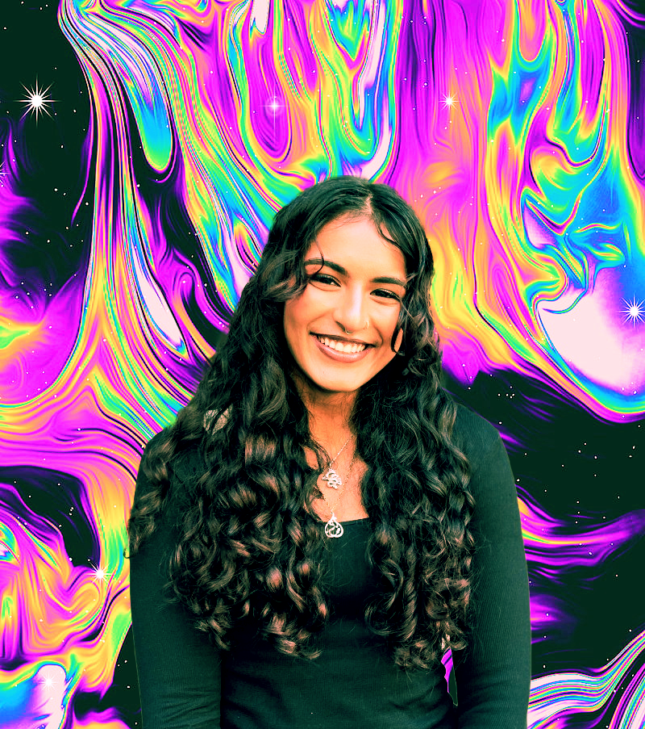

ABOUT ME
N
A
B
I
R
A
A
H
M
A
D
Hi there! ✨ I'm Nabira Ahmad, a junior at NYU Tandon School of Engineering, majoring in Computer Science and exploring Game Engineering and Integrated Design and Media through minors. In the dynamic world of technology, I'm passionate about various areas including database systems, backend and front-end development, systems engineering, and robotics— or anything that moves!
Academic Aspirations
My area for passion lies at the intersection of backend and front-end development. I enjoy the art of problem-solving, creating and managing database systems, and turning my abstract ideas into functional code. Looking forward, I aim to master Unity for game programming, but to also explore new technologies like Virtual Reality (VR). Beyond game programming, I aspire to specialize in integrating databases through APIs, creating a seamless interaction between data and user experiences
Passions Beyond Code
Coding may be like 15% of what makes me, me. Other than that, you'll find me:
Future Aspirations
In the future, I'll work on building resourceful and user friendly mobile apps. I'd love to create engaging challenging playable games, and compete in powerlifting competitions. And more than everything else- I aspire to use my voice to empower and represent brown and Muslim women in America
Connect with me!
If you share the same passions or you simply want to talk, my email and linkedin are linked below. Please feel free to shoot me a email.